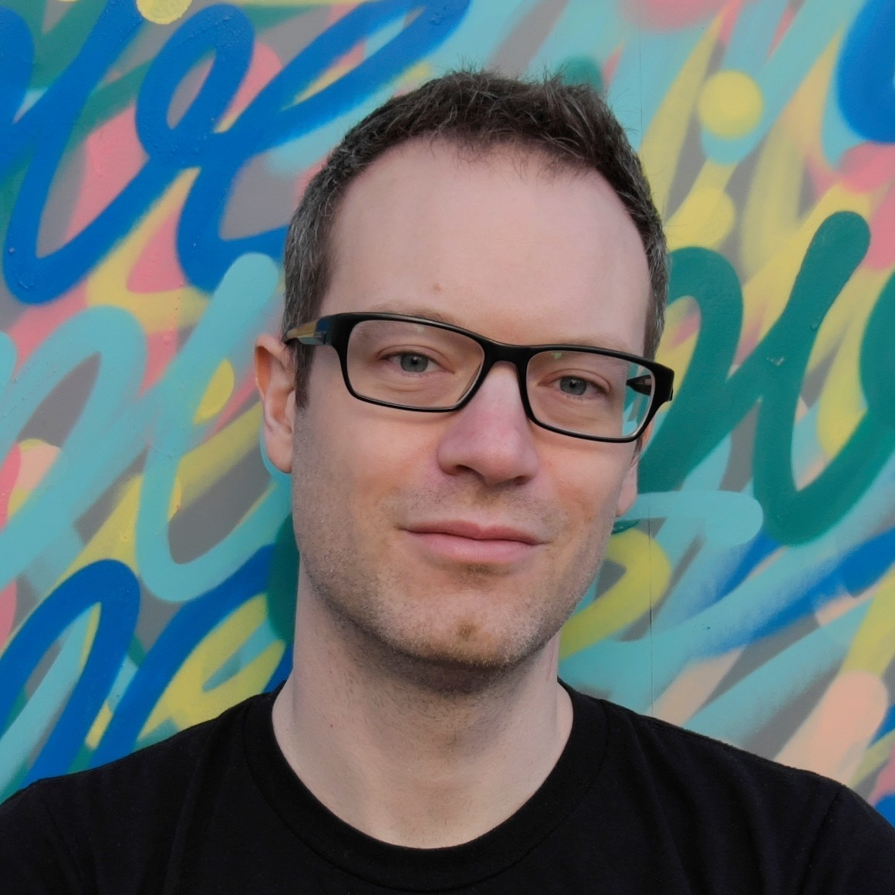

Hi there
My name is Marco Squarcina, I'm a postdoctoral researcher at TU Wien. My research interests focus mainly on web security, but I’m passionate about computer security and hacking in its broadest sense. I love teaching and I'm a strong support of learning by doing. I play and organise CTFs with w0y and mhackeroni. Before relocating to Austria I co-organized the Italian Cyber Challenge project and served as a coach for the national team that competed in the ENISA European Cyber Security Challenge.
The best way to get in touch with me is by e-mail. Please use my PGP key if you need to send sensitive data. You can also reach me by phone at +43 (1) 58801-192607, or in my office at Favoritenstrasse 9-11, Stiege 2, 1. Stock, 1040 Wien.
Selected Publications
- M. Squarcina, S. Calzavara, M. Maffei. The Remote on the Local: Exacerbating Web Attacks Via Service Workers Caches in Progressive Web Applications. In the proceedings of the 15th IEEE Workshop on Offensive Technologies (WOOT 21). 2021. pdf bibtex website
- S. Calzavara, R. Focardi, M. Nemec, A. Rabitti, M. Squarcina. Postcards from the Post-HTTP World: Amplification of HTTPS Vulnerabilities in the Web Ecosystem. In the proceedings of IEEE Symposium on Security and Privacy (S&P). 2019. pdf website
- S. Calzavara, R. Focardi, M. Maffei, C. Schneidewind, M. Squarcina, M. Tempesta. WPSE: Fortifying Web Protocols via Browser-Side Security Monitoring. In the proceedings of USENIX Security. 2018. arXiv pdf slides
- R. Focardi, F. Palmarini, G. Steel, M. Squarcina, M. Tempesta. Mind Your Keys? A Security Evaluation of Java Keystores. In the proceedings of The Network and Distributed System Security Symposium (NDSS 2018). 2018. pdf slides video
- S. Calzavara, R. Focardi, M. Squarcina, M. Tempesta. Surviving the Web: A Journey into Web Session Security. ACM Computing Surveys (CSUR). 2017. Pre-print version: pdf
- R. Focardi, M. Squarcina. Run-time Attack Detection in Cryptographic APIs. In the proceedings of the 30th Computer Security Foundations Symposium (CSF 2017). 2017. pdf slides
- M. Bugliesi, S. Calzavara, R. Focardi, M. Squarcina. Gran: model checking grsecurity RBAC policies. In the proceedings of the 25th Computer Security Foundations Symposium (CSF 2012). 2012. pdf
My scholar profile.
Teaching
- 2021 (WS): lecturer, Attacks and Defenses in Computer Security (VU) [192.111], TU Wien
- 2021 (WS): lecturer, Attacks and Defenses in Computer Security (UE) [192.111], TU Wien
- 2020 (WS): lecturer, Attacks and Defenses in Computer Security (UE) [192.111], TU Wien
- 2020 (WS): guest lecturer, Systems and Applications Security (VU) [192.112], TU Wien
- 2020 (SS): lecturer, Introduction to Security (UE) [192.092], TU Wien
- 2019 (WS): guest lecturer, Advanced Internet Security (VU) [192.091], TU Wien
- 2019 (WS): lecturer, Capture the Flag (SE) [192.092], TU Wien
- 2019 (SS): lecturer, Introduction to Security (UE) [192.082], TU Wien
- 2015/16 - 2017/18: teaching assistant, Security 1 [CM0475], Security 2 [CM0494], Ca' Foscari University of Venice
- 2013/14 - 2014/15: teaching assistant, Security of Computer Systems [CM0288], Ca' Foscari University of Venice
Vulns
- CVE-2018-2794, Oracle Java, CVSS 3.0 Base Score 7.7 (HIGH)
- CVE-2017-10356, Oracle Java, CVSS 3.0 Base Score 6.2 (MEDIUM)
- CVE-2017-10345, Oracle Java, CVSS 3.0 Base Score 3.1 (LOW)
- SAML2.0, Login CSRF on Google
Music
I'm a jungle/drum'n'bass DJ, still using turntables and carrying around a 30kg record bag. You can find a selection of my dj sets on mixcloud.